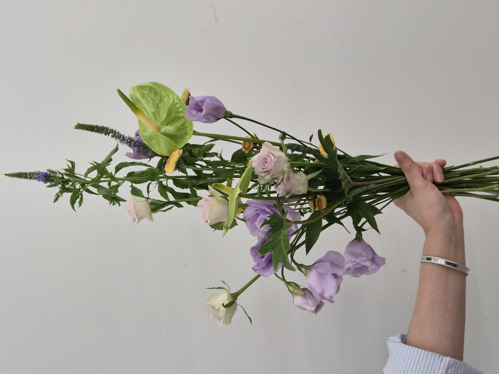

CLASS WORK · HAND-TIED
2026.09.08CONTRAST HAND-TIED
BOUQUET
色・形・線のコントラスト
03 / CLASS WORK
CONCEPT
CONTRAST
THROUGH FORM & COLOR.
연보라와 페일 톤의 부드러운 꽃에 선명한 그린과 옐로 포인트를 더해 색의 대비를 만들고, 둥근 꽃과 길게 뻗는 선 소재를 함께 사용해 형태의 대비를 표현한 핸드타이드 작업입니다.
꽃을 한 덩어리로 모으기보다 높이와 방향, 소재 사이의 여백을 다르게 두어 차분한 색감 안에서도 시선의 흐름과 긴장감이 느껴지도록 구성했습니다.
淡いラベンダーやペールトーンの花に鮮やかなグリーンとイエローを加え、色のコントラストをつくりました。丸みのある花と長く伸びるライン素材を組み合わせ、高さや方向、余白に変化をつけることで、やわらかな色調の中にも視線の流れと緊張感が生まれるよう構成しています。
COLOR PALETTE
色の構成
LAVENDER,
GREEN,
YELLOW.
베로니카와 오션송 로즈를 중심으로 부드러운 베이스를 만들고, 안스리움의 프레시 그린과 작은 옐로·오렌지 포인트를 더해 색의 온도와 명도를 대비시켰습니다.
ラベンダーと淡いローズをベースに、アンスリウムのフレッシュなグリーンと小さなイエロー・オレンジを加え、色の温度と明度にコントラストをつけました。
SOFT LAVENDER
#B9A0C8PALE ROSE
#DDD0D3FRESH GREEN
#83A653WARM YELLOW
#D8B44CDEEP GREEN
#415B3AMATERIALS
使用花材
연보라 리시안셔스와 오션송 장미처럼 부드러운 꽃에, 베로니카의 가는 선을 더했습니다. 그린 안스리움의 넓고 매끈한 면과 퐁퐁 스프레이 국화의 점적인 형태가 서로 다른 질감과 크기를 만들어냅니다.
淡い紫のトルコキキョウやペールトーンのバラに、ベロニカやグラス類の細いラインを加えました。グリーンのアンスリウムがつくる大きく滑らかな面と、小さなスプレーマムの点のような形が、異なる質感とスケールを生み出しています。
리시안셔스(연보라)
淡紫のトルコキキョウ
오션송 장미
ペールラベンダーのバラ
그린 안스리움
グリーンアンスリウム
크림 거베라
クリーム色のガーベラ
퐁퐁 스프레이 국화
イエロー・オレンジのスプレーマム
베로니카
ベロニカ
LAVENDER · GREEN
PALE ROSE · YELLOW
ラベンダーとグリーンに、
淡いローズとイエローを効かせた配色。
COMPOSITION
構成とバランス
CONTRAST,
LINE,
SPACE.
둥글고 부드러운 꽃의 형태와 길게 뻗는 베로니카, 안스리움의 선명한 실루엣을 함께 사용해 형태와 크기의 대비를 만들었습니다.
소재를 한 높이에 모으지 않고 위아래로 분산시키며 사이사이에 여백을 남겨, 세로 방향의 흐름과 가벼운 긴장감이 느껴지도록 구성했습니다.
넓은 면을 가진 안스리움과 작은 국화, 가는 선 소재를 서로 다른 위치에 반복해 한 작품 안에서 면·점·선의 성격이 동시에 읽히도록 했습니다.
丸くやわらかな花と、長く伸びるベロニカやアンスリウムの明確なシルエットを組み合わせ、形とスケールの対比をつくりました。花材を同じ高さにそろえず上下に分散させ、間に余白を残すことで縦方向の流れと軽い緊張感を持たせています。
FINAL VIEW
完成したかたち

포장을 벗긴 상태에서는 길게 올라가는 베로니카와 안스리움의 면, 아래로 흐르는 리시안셔스의 방향이 더 분명하게 보입니다. 서로 다른 높이와 크기의 소재가 한 방향으로 정렬되지 않고 교차하면서 대비라는 주제가 형태적으로 드러납니다.
ラッピングを外すと、上へ伸びるベロニカ、アンスリウムの面、下へ流れるトルコキキョウの方向がより明確に見えます。異なる高さと大きさの花材が一方向にそろわず交差することで、「コントラスト」というテーマが形として表れています。
REFLECTION
制作を振り返って
DIFFERENCE,
TENSION,
BALANCE.
색뿐 아니라 꽃의 크기와 형태, 선과 면, 높이와 여백처럼 여러 요소를 대비시켜 하나의 구성 안에서 차이를 읽히게 하는 연습이었습니다.
강한 형태의 안스리움과 긴 베로니카가 시선을 끄는 만큼, 다른 꽃들과의 간격과 방향을 조절하는 것이 중요하다는 점을 확인했습니다. 다음 작업에서는 대비를 유지하면서도 각 소재 사이의 연결이 조금 더 자연스럽게 이어지도록 균형을 세밀하게 조절하고자 합니다.
色だけでなく、花の大きさや形、線と面、高さと余白など、複数の要素を対比させる練習となりました。存在感のあるアンスリウムや長いベロニカが視線を引く分、ほかの花材との間隔や方向を整えることの大切さも確認できました。
대비를 살리면서 소재 사이의 연결과 여백을 더 자연스럽게 조절하기